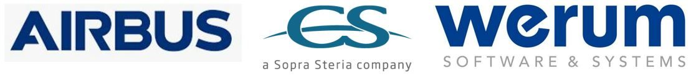
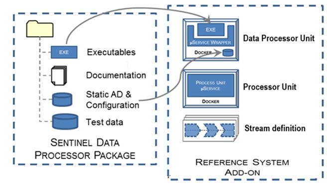
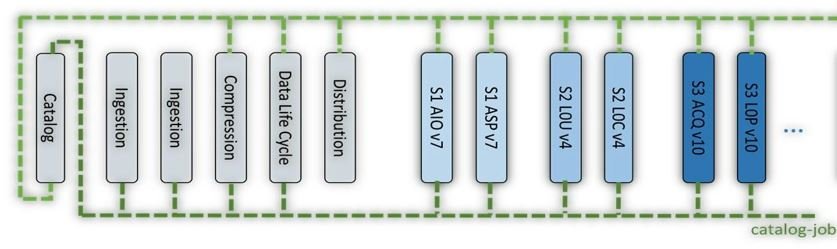
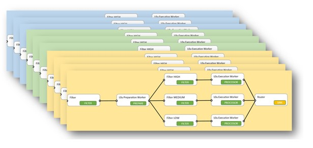
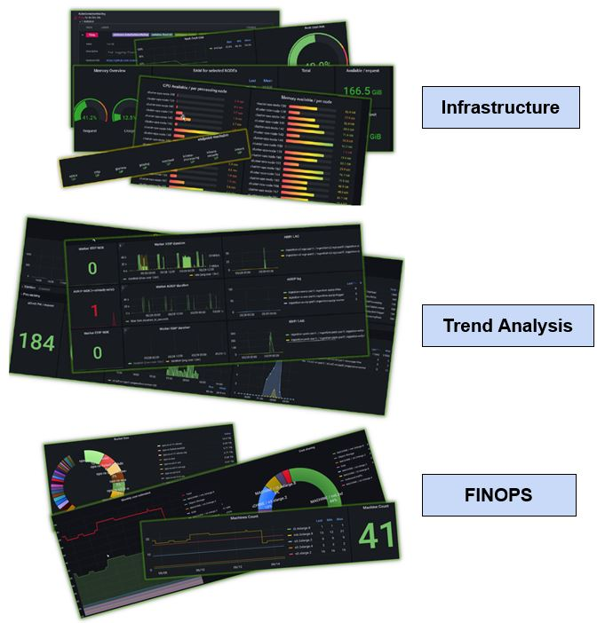

Copernicus
Reference System
The Copernicus Reference System Software is a scalable and open-source processing chain.
It has been developed in AGILE since 2021 under Copernicus, a programme of the European Union implemented by the European Space Agency.
This Open-Source solution is today able to manage in parallel the image processing of all the Copernicus Sentinel 1, 2 and 3 missions relying on Public Cloud scaling capabilities.

Sentinel 1

Sentinel 2

Sentinel 3
- reference-system-software Presents system details, deployment information, and contributions.
- rs-issues Manages problems related to the RS software.
- infrastructure Cloud infrastructure for RS software.
- production-common RS-core modules (common components to all missions)
- processing-sentinel-1 RS-addon modules for Sentinel-1 mission.
- processing-sentinel-2 RS-addon modules for Sentinel-2 mission.
- processing-sentinel-3 RS-addon modules for Sentinel-3 mission.
- monitoring Monitoring tools for RS platform.
- user-web-client Component to retrieve and display products on a map.
- RS-Core modules include all common components developed to support the processing and mission.
- Features:
- Inbound interfaces: ingestion chain receive data from reception stations (CADIP, EDRS), and auxiliary data from ESA’s Auxiliary Data Gathering System.
- Product availability to external users through oDATA/PRIP interface.
- Data cataloging, compression, life cycle management, monitoring and error management.
- A RS add-on is a Spring Cloud Data Flow chain that embeds two kinds of processors :
- Processor Unit: mainly trigger, prepare worker, router, filter
- Data Processor Unit: mainly execution worker. The execution worker wraps a Sentinel Data Processor binaries and their static data
- There is a RS add-on for each processing chain ( per mission, level, product type ...)
- RS Ad-ons are build using the developer resources available in the repositories processing-sentinel-1, processing-sentinel-2, processing-sentinel-3.
- The access to the IPF is subject of a licence agreement and restricted to users specifically authorised by ESA (sentinelprocessors.copernicus.eu website allows to download Sentinel Data Processor Package - IPF - and RS-Addon)
Welcome to the Copernicus Reference System (RS)
The Copernicus Reference System (RS) Software is a key component of the Copernicus Space Component (CSC) Ground Segment, offering an open-source processing and distribution environment. This software not only manages the image processing of Copernicus Sentinel 1, 2, and 3 missions but also benefits from the scaling options of the public cloud. Integrated seamlessly with Sentinel Data Processors, the RS has the potential to substitute nominal CSC Production and Distribution services, embodying a collaborative effort through Free Open Source Software (FOSS).Embark on a journey through the Copernicus Reference System, where collaborative development, openness, and agility converge to drive innovation in Earth observation and data distribution.
1. Development and Collaboration
The entire engineering phase has been collaboratively managed through the public Github project COPRS. All developments and associated documentation are openly available. Embracing an AGILE methodology since 2021, this project operates under Copernicus, a program of the European Union implemented by the European Space Agency. All system components, along with their detailed documentation, can be accessed on GitHub. Have a look at the webpage and figures to get an insightful (visual) overview.
2. GitHub repositories

Repository organization
3. RS-core modules (production-common)
4. RS-addon modules (processing-sentinel-1,2,3)

5. Infrastructure
-
The system is based on a full Cloud native system so the solution can meet Copernicus
unpredictable user scenarios while optimizing costs. Sentinel-1 PDGS returns of
experience is fully integrated in the design of the service.
Furthermore, the Reference System interfaces directly with a cloud orchestrator. Services are launched, duplicated and terminated in synergy with the underlying Cloud infrastructure so the complete system adapts quickly to the current system load or spontaneous failures. The RS core and RS add-on chains are started and stopped according to workload.


Building a cloud agnostic solution allows to take advantage of the fair competition between Cloud Service Providers and to be freed from the cloud provider’s own priorities and strategies.
6. Monitoring
-
A stack with Grafana and several data sources are deployed allowing to
check infrastructure health, control processing and the Financial Operations (FINOPS).
